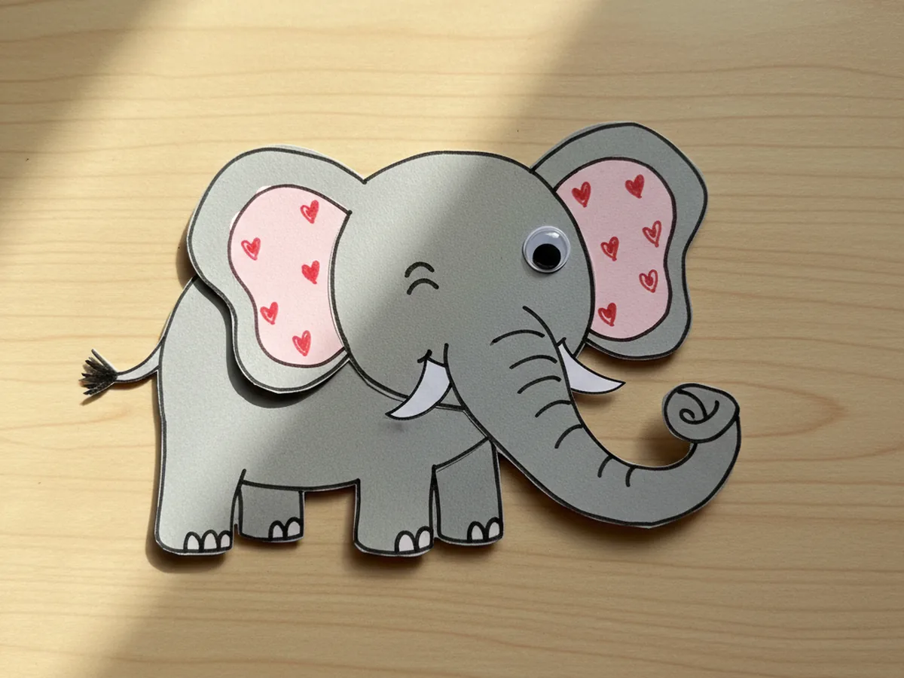
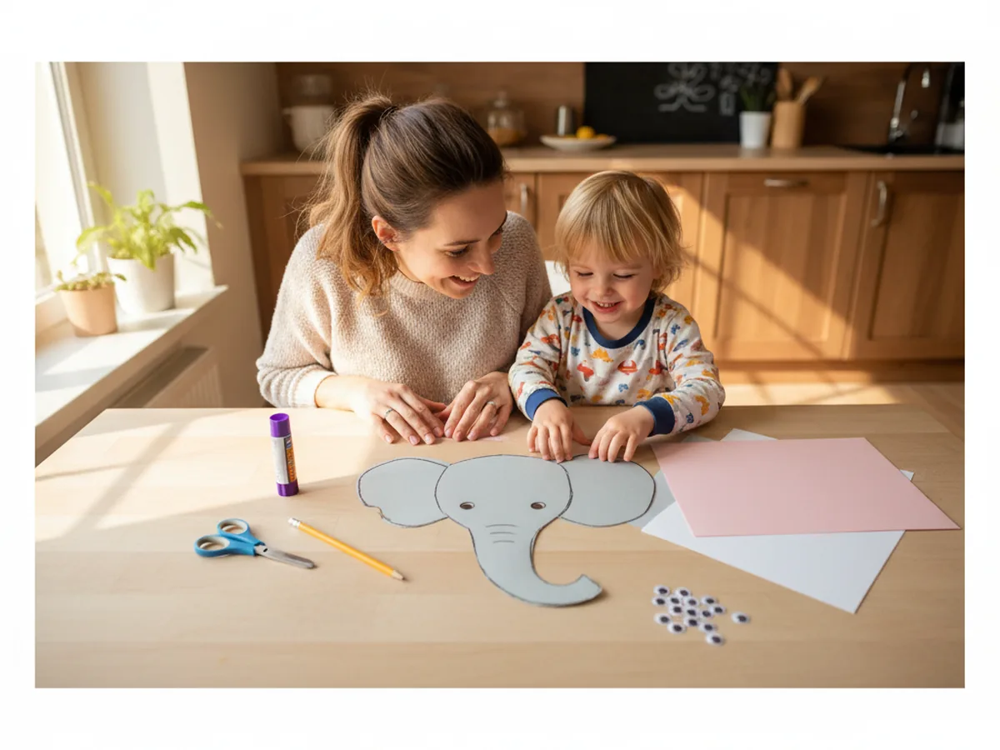
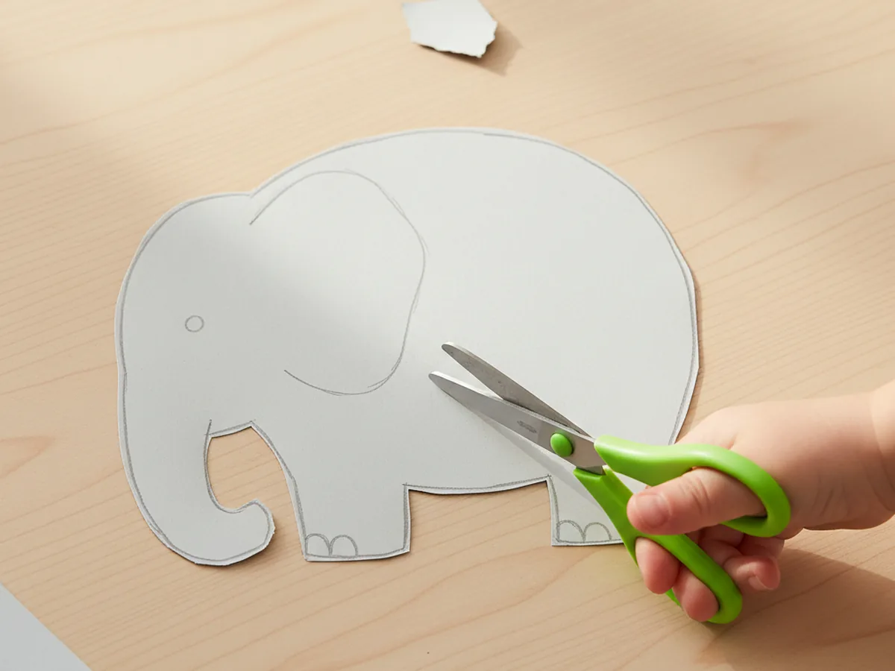
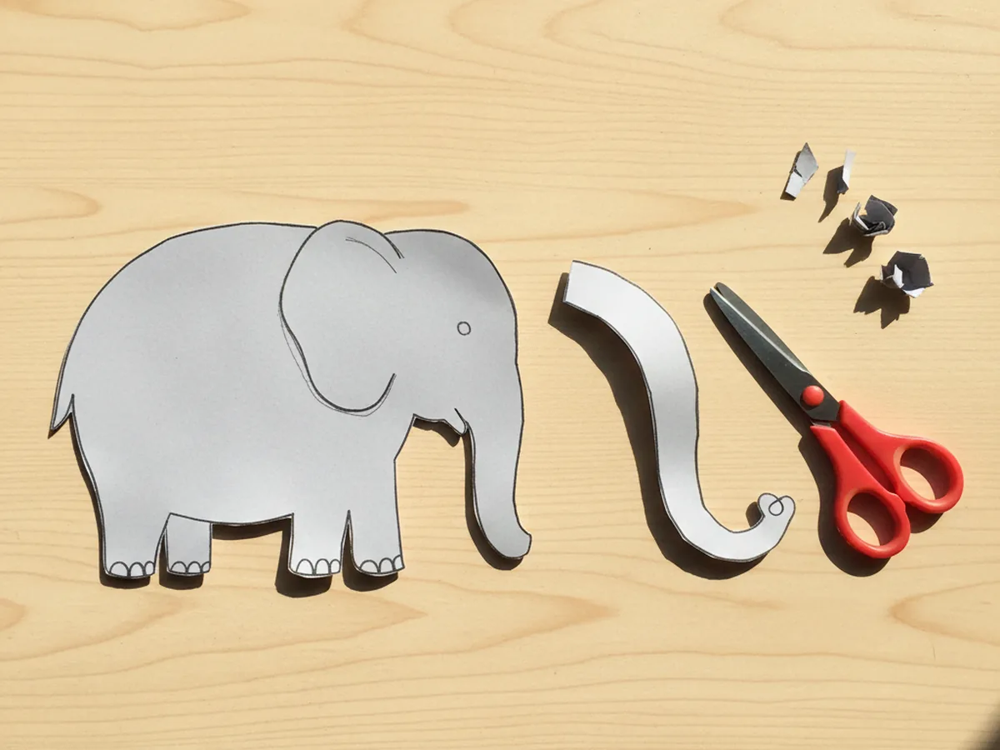
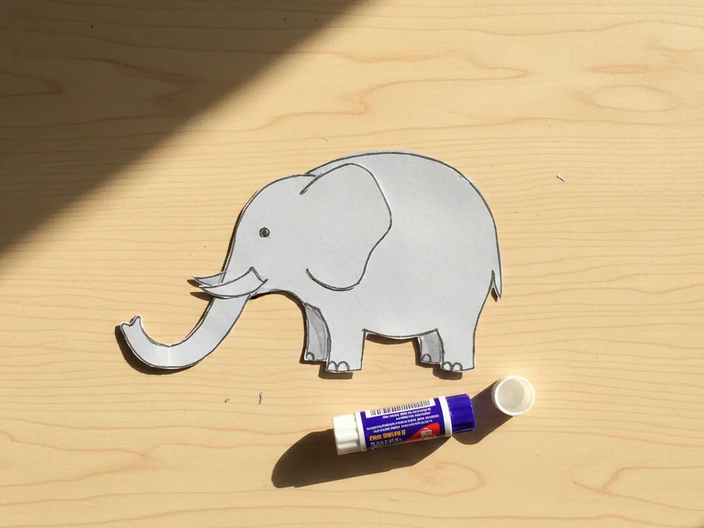
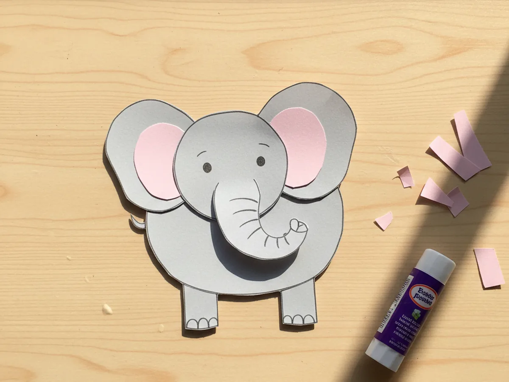
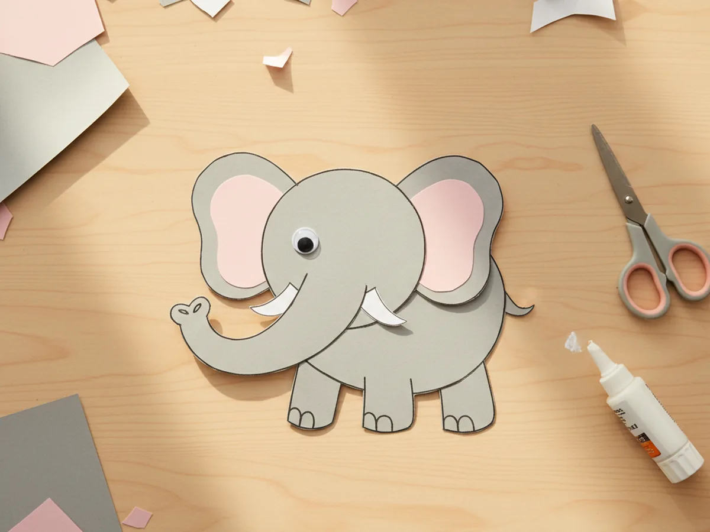
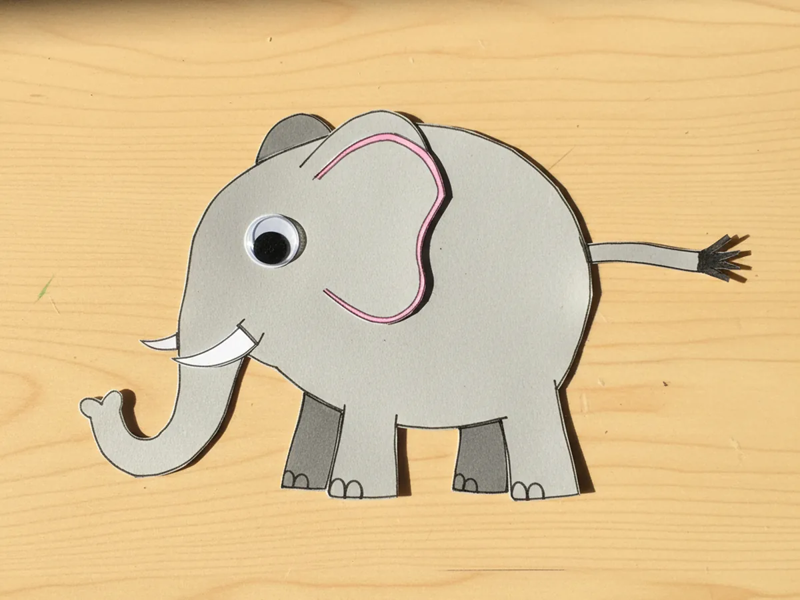
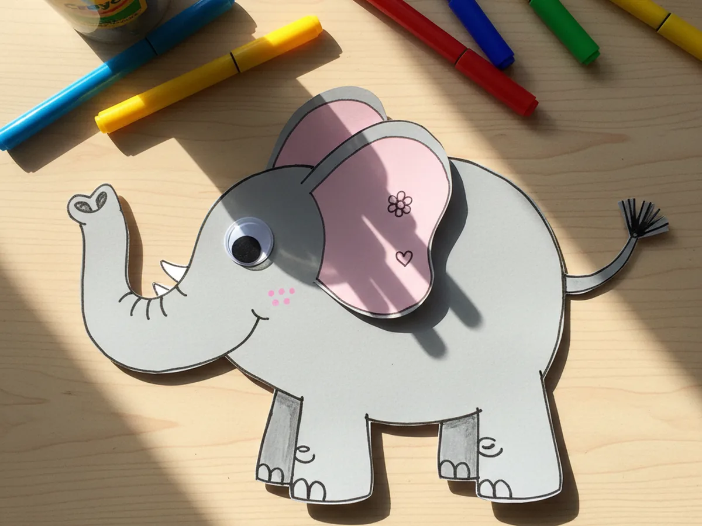

This little paper elephant craft is one of those projects that feels easy from start to finish and turns into something really sweet by the end. You cut a rounded grey body, glue on two soft pink-lined ears, curl a long trunk down the front, add tiny tusks and a googly eye, and finish with a tail. That is the whole craft, and the moment your child sees the trunk curling out and those big floppy ears, you can almost hear the imaginary elephant sounds starting. 🐘
It is a calm, low-mess activity for kids age 3 and up, and one of the best paper animal projects to do with a young child at the kitchen table. Toddlers can press the shapes flat and pick the colors, while older kids can handle most of the cutting on their own. Either way, your paper elephant craft ends up cute, friendly, and very huggable.
Why Kids Love This Craft
Children adore elephants. Something about the giant ears, the long trunk, and that gentle, friendly face makes elephants one of the most loved animals in picture books and zoo trips. When your child realizes they can build their own paper elephant from a few simple shapes, the excitement is immediate. As soon as the trunk goes on, most kids start making little trumpet sounds and pretending the elephant is sipping water out of a bowl, hugging a friend, or stomping through a tiny paper jungle.
This paper elephant craft for kids also gently builds real skills without ever feeling like a lesson. Cutting the rounded body and the soft ear shapes supports scissor practice. Layering the pink inner ears on top of the grey ears helps with hand-eye coordination. Sticking on the googly eye and small tusks is a wonderful fine motor moment. None of it feels like work because the whole project is wrapped in the sweetness of building a gentle giant.
The decorating step is where every child's personality shines through. Some kids want to add tiny hearts to the ears, some draw flowers along the back, some give the elephant a big curly smile under the trunk. There is no wrong version of an easy paper elephant craft, and that freedom is exactly what makes children proud of what they made. By the time the last marker stroke is dry, the elephant has a name, a personality, and usually a new best friend in the family.

What You'll Need
Here is everything you need to make this paper elephant craft at home, and most of it is probably already in your craft drawer.
- Crayola Construction Paper, 240 ct, gives you grey, pink, and white sheets for every part of the elephant
- Astrobrights Cardstock, 65 lb Bright Assortment, sturdier than regular paper and great for ears that hold their floppy shape
- UPINS Self-Adhesive Googly Eyes, 1000 ct, peel-and-stick eyes save toddlers from squeezing glue and bring the elephant face to life
- Elmer's Disappearing Purple Glue Sticks, 4 pack, easy for little hands and dries clear so no white residue shows on the body
- Fiskars Blunt-Tip Kids Scissors, safe for ages 4 and up and just right for these gently rounded shapes
- Crayola Broad Line Markers, for adding playful details like toenails, a smiling mouth, and pretty patterns on the ears
- Sharpie Fine Point Marker, Black, makes crisp small lines for the mouth, the tail fringe, and the toenails
- A pencil, optional for sketching the body and ears before cutting
Step-by-Step Instructions
Take this one calm step at a time and your child will have their own little elephant in about half an hour. Let them help with every part, even if they just press the shapes flat for you.
Step 1: Cut the Elephant Body
Start by cutting one large rounded grey shape from cardstock or construction paper, about 6 inches wide and 5 inches tall. Think of a chunky kidney bean shape with the head bumping up on one side and the back curving down on the other. There is no need to cut a separate head and body, since the whole thing comes from one piece of paper. Use a pencil to lightly sketch the outline first if your child is doing the cutting. Slightly imperfect curves give the paper elephant craft a charming handmade look.

Step 2: Cut the Trunk
From a fresh piece of grey paper, cut a long curved strip about 4 inches long and 1 inch wide for the trunk. The strip should taper just slightly toward the end and curl gently upward at the very tip, like the elephant is about to spray water. Curve the strip with your fingers before gluing so it has a soft natural bend. Lay it next to the body to check the size before moving on.

Step 3: Attach the Trunk
Apply glue to the straight end of the trunk and press it firmly onto the front of the elephant's face, where the head bumps up. The trunk should curve down along the front of the body and the curled tip should lift slightly back upward. Hold it flat for a few seconds while it sets. This is the moment the shape suddenly reads as an elephant, and most kids gasp a little when they see it click together.

Step 4: Cut and Glue the Ears
Cut two large rounded ears from grey paper, each about 2.5 inches wide and slightly taller than they are wide. Then cut two slightly smaller pink ovals to layer inside the ears as the soft inner ear color. Glue the pink shape onto the center of each grey ear, then glue both ears onto the sides of the elephant's head, slightly behind the trunk attachment point. Bend the outer edge of each ear forward a little for a sweet floppy effect that gives the cute paper elephant craft real personality.

Step 5: Add Eyes and Tusks
Stick a self-adhesive googly eye onto the elephant's face above the trunk, slightly toward the ear. One eye works perfectly for a side-view elephant, but you can add two if your child prefers a friendlier face. Then cut two short white curved shapes about half an inch long, like little crescents, and glue one on each side of the trunk near the base. These are the tusks. Keep them small, soft, and friendly, never sharp.

Step 6: Add the Tail
Cut a thin grey paper strip about 2 inches long and a quarter inch wide for the tail. Snip a tiny black paper rectangle into a frayed fringe and glue it to one end of the strip to look like the little tuft of fur at the tip of an elephant tail. Glue the other end of the tail to the back of the elephant body so it points down and slightly away from the body. This tiny detail brings the whole paper elephant craft to life.

Step 7: Decorate the Paper Elephant Craft
Now for the playful part. Hand your child the markers and let them go to town. They might add tiny toenails on each foot, a curved smiling mouth under the trunk, three small dots on the cheek, or pretty patterns on the ears like flowers, hearts, or stripes. Some kids love adding a little decorative blanket on the elephant's back, drawn straight onto the body with markers. Once the marker is dry, your paper elephant craft is ready for its first pretend stomp across the kitchen table. ✨

Variations to Try
Toilet Paper Roll Elephant: Use an empty toilet paper tube standing upright as the body instead of flat paper, and decorate it with the same paper ears, trunk, and tail. The 3D version turns the craft into a sturdier toy that stands on its own and is wonderful for slightly older kids who want a small paper figurine to play with.
Baby and Mommy Elephant: Make two elephants together, one large and one small, and link them so the baby's trunk gently touches the mommy's tail. This is a sweet way to turn the craft into a story about your own family bond, which kids absolutely adore. 💛
Circus Elephant: Add a colorful paper saddle blanket on the elephant's back, a small paper headpiece between the ears, and a tiny ball under one foot. This festive version is a hit with kids who love big top stories.
Final Thoughts
A simple paper elephant craft is one of those projects that proves you do not need anything fancy to make something your child will treasure. A few scraps of paper, a glue stick, and 30 minutes together at the table is enough. The real win is the moment your little one picks up the finished elephant, makes their first soft trumpet sound, and trots it across the table to say hello to a stuffed friend. That is the kind of small magical moment that stays with both of you. Happy crafting, mama.
More Crafts You'll Love
If your family enjoyed making this little elephant, here are two more sweet animal crafts to try next.